Atribut memberikan informasi tambahan tentang elemen HTML.
Tautan HTML didefinisikan dengan tag <a>. Alamat tautan ditentukan dalam atribut href:
Contoh:
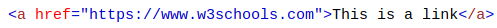Anda akan mempelajari lebih lanjut tentang tautan dan tag <a> nanti dalam tutorial ini.
Gambar HTML didefinisikan dengan tag <img>.
Nama file sumber gambar ditentukan dalam atribut src:
Contoh:
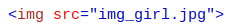Gambar HTML juga memiliki atribut lebar dan tinggi, yang menentukan lebar dan tinggi gambar:
Contoh:
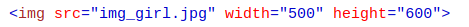Lebar dan tinggi ditentukan dalam piksel secara default; jadi width = "500" berarti lebar 500 piksel.
Anda akan belajar lebih banyak tentang gambar di bab Gambar HTML kami.
Atribut alt menentukan teks alternatif yang akan digunakan, jika gambar tidak dapat ditampilkan.
Nilai dari atribut alt dapat dibaca oleh pembaca layar. Dengan cara ini, seseorang "mendengarkan" halaman web, mis. orang yang memiliki gangguan penglihatan, dapat "mendengar" elemen tersebut.
Contoh:
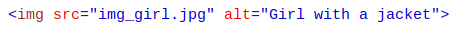Atribut alt juga berguna jika gambar tidak dapat ditampilkan (mis. Jika tidak ada):
contoh:
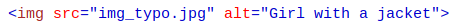Atribut style digunakan untuk menentukan gaya suatu elemen, seperti warna, font, ukuran dll.
Contoh:
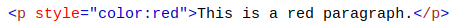Anda akan mempelajari lebih lanjut tentang penataan gaya di tutorial ini, dan di Tutorial CSS kami.
Bahasa dokumen dapat dideklarasikan dalam tag <html>.
Bahasa dideklarasikan dengan atribut lang.
Mendeklarasikan bahasa penting untuk aplikasi aksesibilitas (pembaca layar) dan mesin pencari.
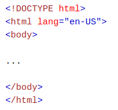Dua huruf pertama menentukan bahasa (en). Jika ada dialek, tambahkan dua huruf lagi (AS).
Di sini, atribut title ditambahkan ke elemen <p>. Nilai dari atribut title akan ditampilkan sebagai tooltip ketika Anda mengarahkan mouse ke paragraf:
Contoh:
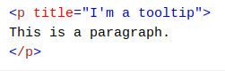Standar HTML5 tidak memerlukan nama atribut huruf kecil.
Atribut judul dapat ditulis dengan huruf besar atau kecil seperti judul atau TITLE.
W3C merekomendasikan huruf kecil dalam HTML, dan menuntut huruf kecil untuk tipe dokumen yang lebih ketat seperti XHTML.
Di W3Schools kami selalu menggunakan nama atribut huruf kecil.
Standar HTML5 tidak memerlukan tanda kutip di sekitar nilai atribut.
Atribut href, ditunjukkan di atas, dapat ditulis tanpa tanda kutip:
Bad
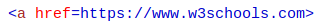Good
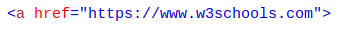W3C merekomendasikan kutipan dalam HTML, dan menuntut penawaran untuk tipe dokumen yang lebih ketat seperti XHTML.
Terkadang perlu menggunakan kutipan. Contoh ini tidak akan menampilkan atribut judul dengan benar, karena mengandung spasi:
Contoh:
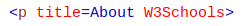Menggunakan kutipan adalah yang paling umum. Menghilangkan tanda kutip dapat menghasilkan kesalahan.
Di W3Schools kami selalu menggunakan tanda kutip di sekitar nilai atribut.
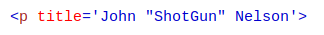atau versi kebalikannya :
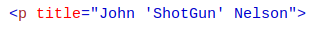Di bawah ini adalah daftar alfabet beberapa atribut yang sering digunakan dalam HTML, yang akan Anda pelajari lebih lanjut dalam tutorial ini:
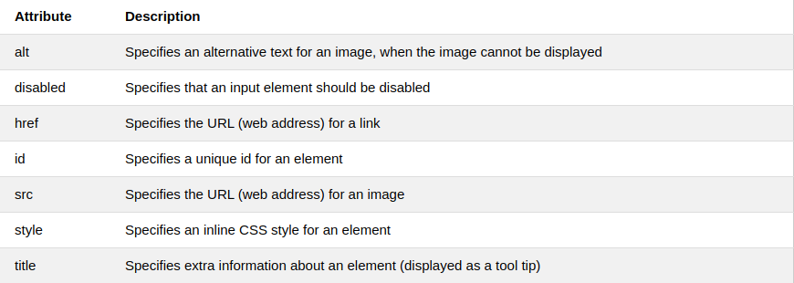Daftar lengkap semua atribut untuk setiap elemen HTML, tercantum dalam: Referensi Atribut HTML kami.